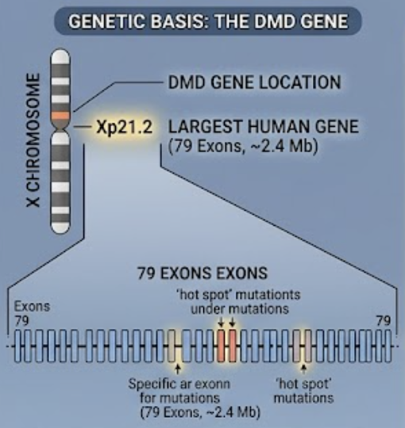

|
Gerard Ompad ```htmlWith more than 15 years of experience in computational statistics, data science, and artificial intelligence, I have held technical and leadership roles across pharmaceuticals, healthcare, energy, environmental monitoring, telecommunications, and financial inclusion. I am currently a full-time Statistical Data Science Manager at Pfizer, where I apply data science and statistical programming to clinical trials, particularly in vaccine and immunogenicity research. I work with a multidisciplinary team of statistical programmers, data scientists, and statisticians to support clinical data analysis and the preparation of regulatory documentation. Before joining Pfizer, I spent five years at DTN as a Senior Principal Data Scientist. In this role, I contributed to the research and development of data-driven products for energy and environmental monitoring, with a particular focus on wildfire applications. I also teach computational statistics and probability theory at the Department of Statistics, University of the Philippines Cebu. My research integrates computational statistics and artificial intelligence with applications in tropical medicine, pharmaceutical research, and chemical engineering. I am a guest researcher with the University of Copenhagen Drug Safety Group, led by Maurizio Sessa. As part of my civic engagement, I also conduct research with Data and Implementation Sciences for Health, a non-governmental organization that applies technology, artificial intelligence, and data science to population health. I am currently completing an MSc in Statistics at the University of the Philippines Diliman, my second master’s degree. My thesis investigates uncertainty quantification and empirical likelihood estimation for generative artificial intelligence. I also hold an MSc in Tropical Medicine from the University of the East Ramon Magsaysay Memorial Medical Center and a BSc in Chemical Engineering from the University of San Carlos. |

|
ResearchI'm interested in conducting both applied and theoretical research on the intersection of computational statistics, deep learning, and generative AI on topics involving tropical medicine, chemical engineering, and drug or vaccine research. At DTN , I was heavily involved in modeling wildfire and storm risks, as well as in the development of innovative products for energy and fuels. I am also currently working with Maurizio Sessa of the University of Copenhagen Drug Safety Group, developing generative A.I. for pharmacovigilance and pharmacoepidemiology. I am also working with Andrea Rossi from the University of Milan on the topics of inappropriate prescriptions for geriatric patients, and with Dr. Jason V. Alacapa of the Data and Implementation Sciences for Health for TB (tuberculosis) analytics. All papers are downloadable at my Researchgate. If you don't have a Researchgate account, you can message me in LinkedIn Account, I am more than happy to provide you a copy. |
|
 |
Meta-analysis of clinical trials assessing the safety of pharmacological treatments for muscular degeneration in Duchenne muscular dystrophy
Gerard Ompad, Petra Maria Saura, Nicole Sonne Heckmann, Andrea Rossi, Elena Olmastroni, Manuela Casula & Maurizio Sessa BMC Pharmacology and Toxicology, 2026 Currently, there is a lack of meta-analysis providing precise incidence estimates of adverse drug reactions (ADRs) and associated risk differences (RDs) linked to pharmacological treatments for muscle degeneration in Duchenne Muscular Dystrophy (DMD). A systematic search of PubMed, Embase, and ClinicalTrials.gov (January 1, 2000–June 5, 2026) identified clinical trials evaluating safety of pharmacological treatments for muscle degeneration in DMD. A random-effects meta-analysis estimated ADR incidence, and RDs versus a common reference (givinostat) were derived from the pooled incidences rather than from conventional head-to-head treatment contrasts. Thirteen clinical trials were included. Heterogeneity in ADR incidence across treatments (p < 0.05) was identified. Prednisone and prednisolone showed the highest proportions of serious ADRs. Discrepancies were found compared to Summary of Product Characteristics (SmPC): deflazacort showed higher rates of erythema (+ 1.5%) and pollakiuria (+ 4.8%), while vamorolone showed increased Cushingoid features and appetite (+ 7.0%). Subgroup analyses showed dose- and duration-dependent ADRs for deflazacort and prednisone. A reference-anchored exploratory comparison of pooled incidences showed lower gastrointestinal and hematological ADR risks with corticosteroid monotherapy than with givinostat plus corticosteroids. Deflazacort showed lower risks of diarrhea (RD: − 0.3860), decreased appetite (RD: − 0.3160), and decreased platelet count (RD: − 0.4110). Precise ADR estimates can support decision-making in DMD care, helping clinicians balance safety and efficacy, address family concerns, and promote adherence by contextualizing treatment risks. |

|
De Novo Design of Gram-Negative Antibacterial Compounds Using Junction-Tree Variational Autoencoders and Computational Screening
Alexandra R. Abainza; Mark Allen P. Jugalbot; Gerard Ompad 2025 IEEE Asia-Pacific Conference on Geoscience, Electronics and Remote Sensing Technology (AGERS), 2025 Traditional antibiotic development remains slow and costly, with virtually no new classes targeting resistant gramnegative bacteria (GNB), highlighting the need for innovative approaches in generating new gram-negative antibacterial (GNAB) compounds to combat GNB. This study introduces a computational framework utilizing Junction Tree Variational Autoencoders (JT-VAE) and computational screening to design novel GNAB compounds. Generated compounds underwent Tanimoto similarity analysis and Lipinski’s Rule of Five (LRo5) screening to assess structural novelty and oral bioavailability, followed by agglomerative hierarchical clustering with cophenetic and silhouette score evaluation. Training on curated GNAB compounds from ChEMBL, the GVAE model, specifically the Junction Tree Variational Autoencoder (JT-VAE) model, demonstrated superior performance, producing 10,000 molecules with 100% validity. Subsequent filtering retained 2,141 compounds (21.41%) within optimal Tanimoto similarity thresholds (0.30-0.50) that balance novelty with known antibacterial substructures while meeting LRo5 with ≤2 violations. Property distributions aligned with fragment-based design principles, such as the Rule of Three. Clustering analysis revealed nuanced performance differences among benchmark models: JT-VAE achieved a cophenetic correlation coefficient (CCC) of 0.934 and silhouette score of 0.76, while unconstrained GVAE demonstrated superior clustering performance (silhouette score: 0.86, CCC: 0.98) despite occasionally generating disconnected molecular fragments. JT-VAE’s fragment-based approach successfully addresses limitations of atom-by-atom generation, particularly in handling aromatic systems essential for antibacterial activity. By combining hierarchical graph generation with rigorous cheminformatics filtering, this study provides a reproducible blueprint for accelerating GNAB compound discovery, advancing toward timely, data- driven solutions for the escalating antimicrobial resistance crisis. |

|
Deep Learning-Based Modeling of Marine Heatwave Events: Identifying Key Exogenous Drivers and Enhancing Predictive Accuracy
Zeus D. Elderfield; Seth S. Demeterio;Isabel Joy Adriatico; Gerard Ompad; Christian V. Maderazo 2025 IEEE Asia-Pacific Conference on Geoscience, Electronics and Remote Sensing Technology (AGERS), 2025 Prolonged sea surface temperature (SST) departures above seasonal thresholds—are increasing in the Philippine Sea, threatening fisheries, reefs, and coastal livelihoods. The researchers assemble a daily, area-averaged 1995–2024 record that merges satellite SST, large-scale climate indices (ENSO, PDO, IOD, MJO), and ERA5 atmospheric fields, interpolate short gaps, standardize variables, and use 90-day lookbacks with a one-day (lead-1) forecast horizon. Recursive feature elimination identifies five informative drivers: SST anomaly, Indian Ocean Dipole, surface solar radiation, 2-meter air temperature, and 10-meter meridional wind. A univariate N-BEATS baseline (SST only) achieves lead-1 MAE 0.195 °C, RMSE 0.247 °C, R² 0.959, and MHW F1 0.937 on the held-out test block. A two-stream NBEATSX that encodes exogenous histories reduces lead-1 errors to MAE 0.087 °C and RMSE 0.108 °C (R² 0.992) while raising MHW F1 to 0.971. Kernel SHAP attribution shows the retained drivers—winds, air temperature, solar radiation, and SST anomaly—jointly explain roughly half of the model’s predictive variance alongside the autoregressive SST channel. These results demonstrate that integrating carefully selected exogenous variables into an interpretable deep-learning framework substantially improves near-term MHW predictability and highlights the physical drivers modulating Philippine Sea heat extremes. |

|
Extension of the Sessa Empirical Estimator to Clustering Techniques with Non-Convex Assumptions
Marlex Lance Manalili; Reece Sergei Lim; Gerard Ompad 2025 IEEE International Conference on Communication, Networks and Satellite (COMNETSAT), 2025 The Sessa Empirical Estimator is a data-driven method that constructs treatment episodes from observational data by incorporating the K-Means clustering algorithm. However, K-Means is limited by its assumption of spherical clusters, which often does not hold true for complex, real-world pharmacoepidemiological datasets exhibiting non-convex shapes and varying densities. This study extends the Sessa Empirical Estimator by integrating alternative clustering algorithms to accommodate such data characteristics. Various Cluster Validity Indices were also utilized to determine optimal cluster configurations. Statistical analysis, employing the Mann-Whitney U test, demonstrates a highly significant difference between the distributions of median duration estimates from the novel Sessa Empirical Estimator and the traditional approach. The proposed method showed that the novel Sessa Empirical Estimator consistently yields more compact distributions with fewer outliers, indicating superior consistency, precision, and reliability. This improved Sessa Empirical Estimator provides a more robust and accurate methodology for estimating medication exposure, enhancing the utility of observational data in pharmacoepidemiological research. |

|
Spatiotemporal and Causal Analysis of Dengue Transmission in Cebu Province, Philippines
Bryan Ignatius P. Sanchez, Francis James A. Lagang, Christine D. Bandalan, Frances E. Edillo; Gerard Ompad 2025 IEEE International Conference on Communication, Networks and Satellite (COMNETSAT), 2025 Climate change affects public health, particularly through increased Aedes-borne dengue illnesses. This study investigated dengue transmission across time and space in Cebu Province, Philippines using wavelet-based time-series analysis and causal inference. Continuous Wavelet Transform (CWT) revealed strong annual cycles of dengue incidence between 2013 and 2023, with disruptions during the COVID-19 pandemic. Post-pandemic recovery of seasonality was fastest in Cebu city, while Mandaue city and Lapu-Lapu city experienced extended disturbances. Using the Peter and Clark Momentary Conditional Independence (PCMCI) algorithm, lagged causal effects from relative humidity and the minimum infection rates (MIR) of DENV-2 and DENV-4 transmitted by Aedes albopictus (Skuse) in Cebu and Mandaue cities were determined. In contrast, Lapu- Lapu city was influenced by temperature, precipitation, and the MIR of DENV-1 and DENV-4. These findings underscore the value of integrating climate and arboviral data in a dengue vector species in localized outbreak forecasting. |

|
Current Use of Common Data Models in the Nordic Countries
Gerard Ompad, Carolyn E. Cesta, Jacqueline M. Cohen, Maarit K. Leinonen, Heidi Taipale, Huiqi Li, Lárus S. Guðmundsson, Mika Gissler, Maurizio Sessa Pharmacoepidemiology & Drug Safety, 2025 Common data models (CDMs) standardize healthcare data to facilitate reproducible and consistent analyses, supporting decision-making in medicine and vaccine safety and pharmacoepidemiology. Despite their global recognition, the implementation and use of CDMs in the Nordic countries remain underexplored, particularly in the context of cross-national collaborations. |

|
Off-the-Shelf Large Language Models for Guiding Pharmacoepidemiological Study Design
Gerard Ompad, Keele Wurst, Darmendra Ramcharran, Anders Hviid, Andrew Bate, Maurizio Sessa Clinical Pharmacology & Therapeutics, 2025 Assessed the ability of two off-the-shelf large language models, ChatGPT and Gemini, to support the design of pharmacoepidemiological studies. While ChatGPT and Gemini show promise in certain tasks supporting pharmacoepidemiological study design, their limitations in relevance and coding accuracy highlight the need for critical oversight by domain experts. |

|
Utilizing Deep Learning to Predict the Potency of Beta-Lactamase Inhibitors
Jericho Pasco, Sheena Stella Salde, Gerard Ompad, Christine Bandalan 13th International Conference on Bioinformatics and Computational Biology (ICBCB), 2025 Drug-resistant bacteria pose a significant global health threat, driving the need for innovative antibiotic development. The efficacy of these antibiotics is evaluated through biological potency assays that measure their ability to elicit targeted responses. Beta-lactam bacteria produce beta-lactamases, enzymes that hydrolyze the beta-lactam ring, rendering the antibiotics ineffective. To counteract this mechanism, beta-lactamase inhibitors play a pivotal role by preventing the enzymatic degradation of beta-lactam antibiotics. This study focuses on predicting the chemical compositions and molecular motifs that characterize active beta-lactamase inhibitors. Using k-means clustering, active small-molecule beta-lactamase inhibitors were categorized based on their unique molecular structures. A graph-based modeling approach was employed to represent these molecular structures, then leveraging Graph Attention Networks (GAT) to identify and predict substructural features associated with each distinct cluster. Molecular graph representations served as inputs for the GAT model, enabling precise classification of compounds into distinct clusters. The GAT model's performance in multiclass classification was benchmarked against traditional approaches, demonstrating superior accuracy in identifying key substructures that differentiate active beta-lactamase inhibitors. Additionally, the attention mechanism within the GAT model facilitated the identification of specific molecular motifs by focusing on relevant structural features during the learning process. The findings highlight the effectiveness of the graph-based approach in advancing the understanding and prediction of active betalactamase inhibitors, with implications for drug discovery and combating antibiotic resistance. |

|
Deep Learning Methods to Predict Sea Surface Temperature and Marine Heatwave Occurrence in the Philippine Sea
Isabel Joy Adriatico, Shaun Tristan Elizer Cuesta, Gerard Ompad Software Engineering: Emerging Trends and Practices in System Development. CSOC 2025. Lecture Notes in Networks and Systems, vol 1560. Springer, 2025 Marine heatwaves (MHWs), which are characterized by prolonged periods of anomalously high sea surface temperatures (SST), pose significant threats to marine ecosystems, coastal economies, and global biodiversity. The Philippines—situated in the Coral Triangle—relies heavily on its marine resources, making it vulnerable to these impacts. This study explores the use of deep learning models to predict SST and identify the occurrence of MHWs in the Philippine Sea using data sourced from NOAA Daily OISST. The study evaluated four deep learning architectures: (1) Long Short-Term Memory (LSTM), (2) Convolutional Neural Networks (CNN), (3) a hybrid model combining the strengths of both LSTM and CNN, and (4) Neural Basis Expansion Analysis for Interpretable Time Series (N-BEATS). To optimize performance, all models were fine-tuned using Bayesian optimization (BO). The hybrid model demonstrated a superior performance in SST forecasting, achieving RMSEs of 0.1034 °C at 1-day and 0.0652 °C at 14-day lead times. For MHW detection, N-BEATS achieved an RMSE of 0.0523 °C, with a recall of 98.25%, ensuring reliable identification of rare events. N-BEATS also obtained an F1-score of 97.67%, reflecting a strong balance between precision and recall, minimizing both false positives and false negatives. These results highlight the potential of neural networks in providing accurate SST forecasting and MHW detection to mitigate climate change impacts on the Philippines’ marine ecosystems and coastal communities. |

|
Detecting Diseases in Corn through Convolutional Neural Network Architectures and Ensemble
James Vincent Bacus, Caitlin Mariel Lindsay, Christian Maderazo, Gerard Ompad Proceedings of the 2024 7th Artificial Intelligence and Cloud Computing Conference (AICCC 2024), 2024 Crop diseases reduce yield, affecting a nation's agricultural sector. This is more pronounced in nations such as the Philippines, where agriculture is the nation's foundation. To decrease the cost and time needed for disease detection, this study utilized Transfer Learning on three Convolutional Neural Networks (DenseNet201, EfficientNetV2M, and InceptionResNetV2) to identify three corn diseases: Common Rust, Blight, and Gray Leaf Spot. Data Augmentation was used to diversify the image dataset, resulting in 4,000 images per category. This research presents a comparison between the different architectures. It also illustrates the effect of the Soft Voting Ensemble Method. |

|
Investigating Causal Relationships Between Inflation News Among Other News Topics In Philippine News Media Using Granger Causality
Erwin Antepuesto, Stan Kiefer Gallego, Gerard Ompad, Angie Ceniza 2024 IEEE International Conference on Communication, Networks and Satellite (COMNETSAT), 2024 Beyond economic concerns, inflation has also influenced the media narratives of other topics. This study aims to explore how inflation news impacts various aspects of Philippine society by investigating the relationships of inflation-related news articles and other news topics using Granger Causality. |

|
Multi-Network Based Approach for Drug Repurposing
Ronan Jasper G. Reponte, Joshua Rodriguez, Gerard Ompad, Angie Ceniza 2024 IEEE International Conference on Communication, Networks and Satellite (COMNETSAT), 2024 Utilizes a novel complex multi-layered network approach for aggregating drug networks of varying information into a single unified network. Under the hypothesis that drugs that are closely related will appear as neighboring nodes, using a community detection approach allows novel discovery of new applications of old and existing drugs. This paper describes a method to aggregate multi-layered network. Drug data is collated from DrugBank and PubChem; an adjacency matrix was created, from which the Normalized Graph Laplacian is generated. Prior to network aggregation, eigenvectors, and Uniform Manifold Approximation and Projection (UMAP) methods were utilized to reduce the network dimension. Additionally, an inference was implemented to test for complete spatial randomness (CSR) to check for node scattering. |